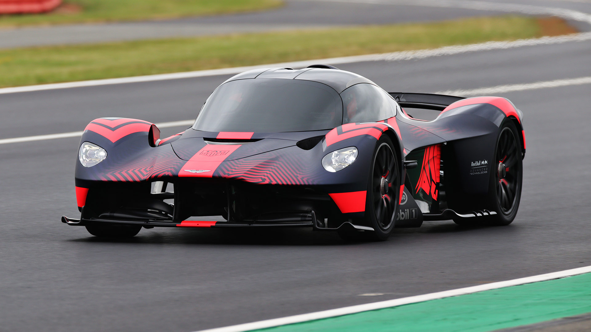
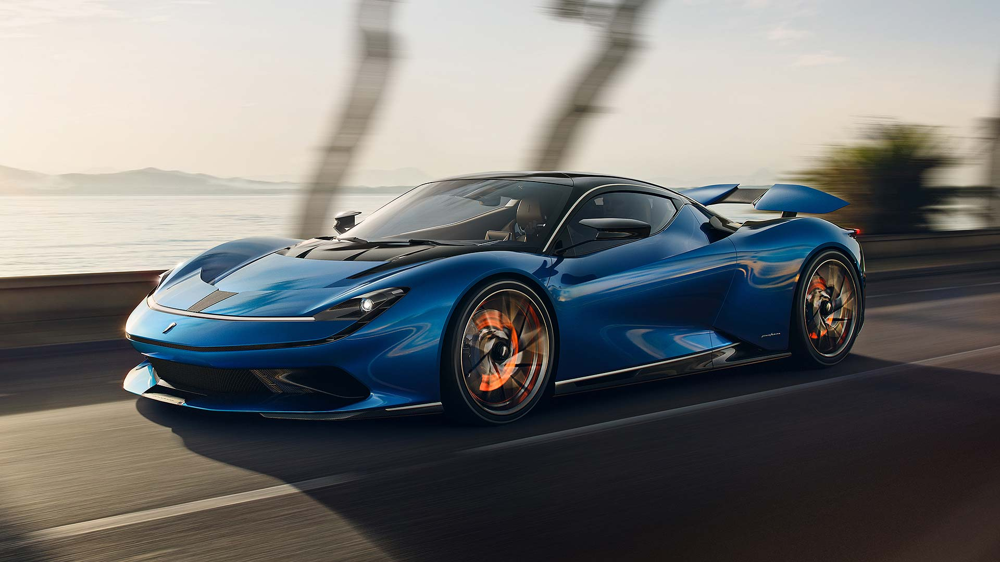

Los hypercars
Los hypercars se tratan de los vehículo que cumplen los máximos estándares en
cuatro apartados principales: tecnología, prestaciones, exclusividad y diseño.
En pocas palabras, un hiperdeportivo ofrece más de todo,
marca el techo al que es capaz de llegar la industria de la automoción.
Estos son de los mejores dos hypercars del momento:
-
El Aston Martin Valkyrie es un producto de la colaboración entre
Aston Martin y Red Bull Racing, para crear un coche totalmente utilizable
y agradable como un coche de carretera. Los fabricantes del coche reclaman
el título de coche más rápido del mundo, de conducción legal en carretera.

-
El Pininfarina Battista es un hypercar eléctrico,
fabricado por Automobili Pininfarina GmbH con sede
en Múnich, Alemania, empresa con raíces en la firma
italiana de diseño de automóviles y carrocero Pininfarina.
